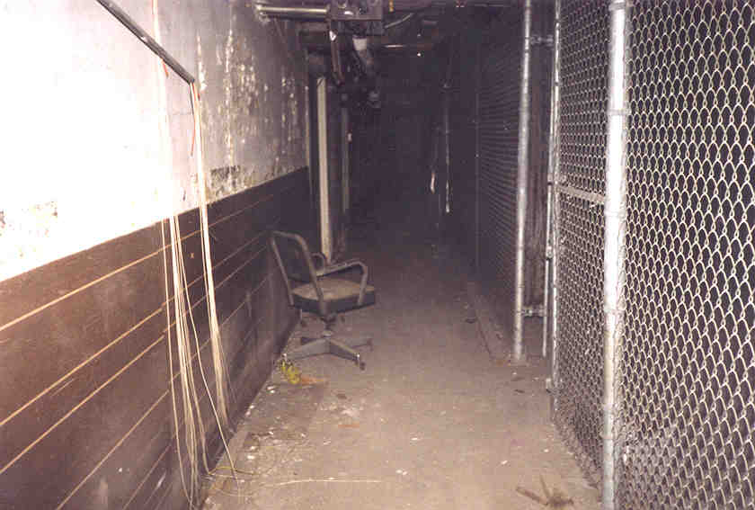
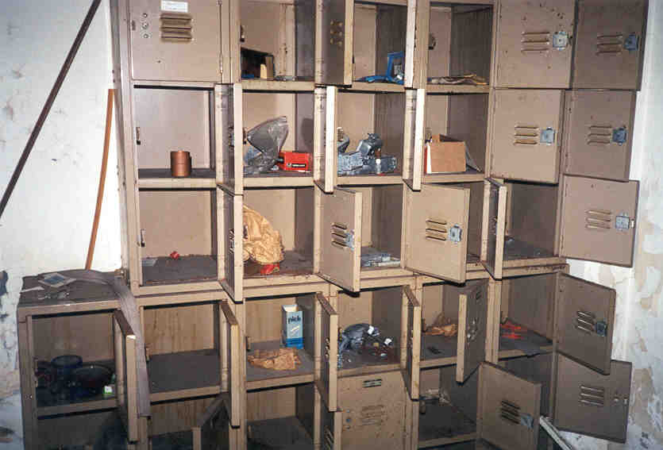
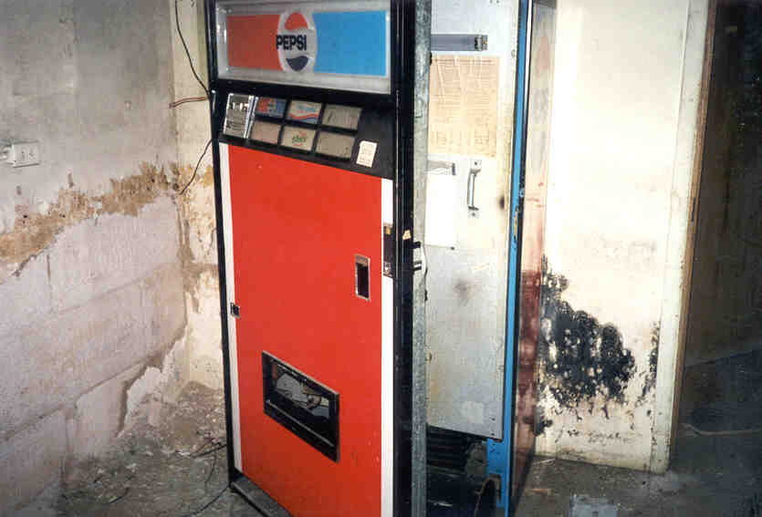
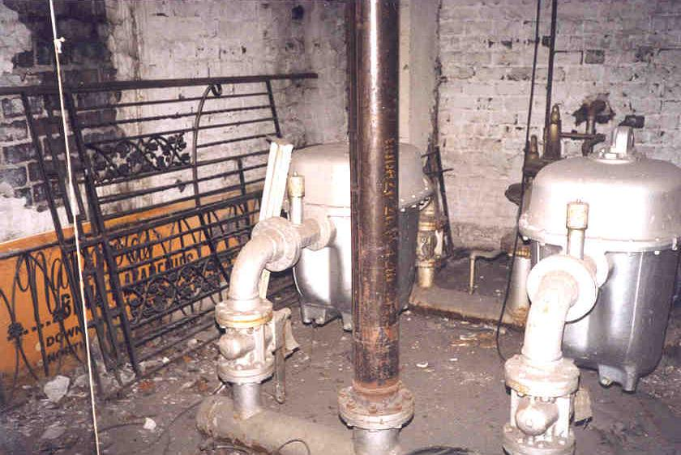
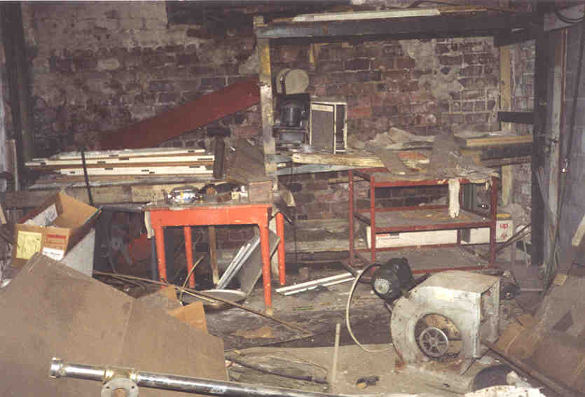
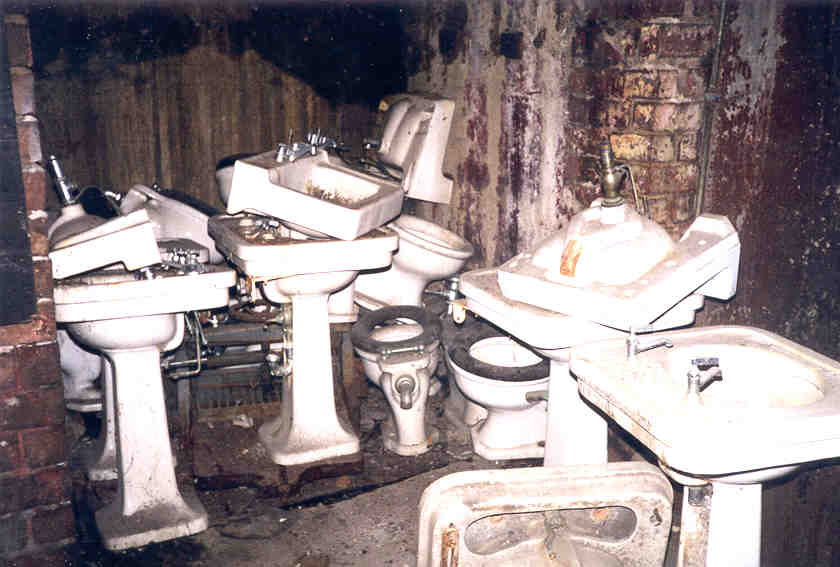

Basement
The basement is basically a long hallway running the length of the building. On one side are long cages. On the other are maintenance rooms and offices. We found a lot of paperwork, keys, and other interesting artifacts down here.


Among the interesting things we saw: an old Pepsi machine, signs directing EPA employees to training sessions, lockers for the maintenance men, desks, files filled with tax returns from the 1980s, more dead birds, and piles and piles of toilets and sinks.





The most shocking part of our trip through the basement was walking into a room near the middle and finding a fluorescent bar glowing in the ceiling near a big electrical box. None of the lights work in the whole building, but this section is lit up because they need to power the string of lights lining the canopy which shields the sidewalk outside from falling crack pipes.

Many of the artifacts we found came from down here. The basement hardly looks abandoned, if you've ever seen the crappy basements of some functioning buildings. And we unfortunately failed to encounter the ghostly little girl. If she exists in the musty basement of the Seneca, she is spending her afterlife in a lonely place.

Back